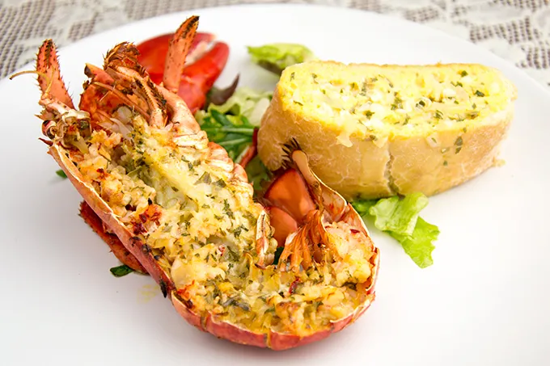

kreeft met kruidenbrood

Ingredienten
- 2 gekookte kreeften
- 4 el geraspte parmezaan of oude kaas
- 1 sjalot, fijngesnipperd
- 1 tl mosterd
- tabasco
- Sap van een halve limoen
- 150 ml droge, witte wijn
- 150 g zachte boter
- paprikapoeder
- 1 el gedroogde peterselie
- 1 el gedroogde dille
- zout
- peper
Bereiding
- Meng de honing, sojasaus, olijfolie en hoisin saus door elkaar in een bakje en laat even staan.
- Snijd de kipfilet in stukjes en breng op smaak met zout en peper. Haal alle kipstukjes door een beetje bloem. Giet een beetje olie in een pan en verwarm de olie. Als de olie warm is voeg je de kipstukjes toe. Bak de kipstukjes rondom bruin.
- Voeg dan 2 uitgeperste tenen knoflook toe en bak een minuutje mee. Daarna zet je het vuur zacht en voeg je de saus toe.
- Laat dit nog een paar minuten zachtjes pruttelen en serveer dan de kip met wat fijngesneden bosui en sesamzaadjes. Lekker met rijst en broccoli erbij, of bijvoorbeeld gebakken rijst.